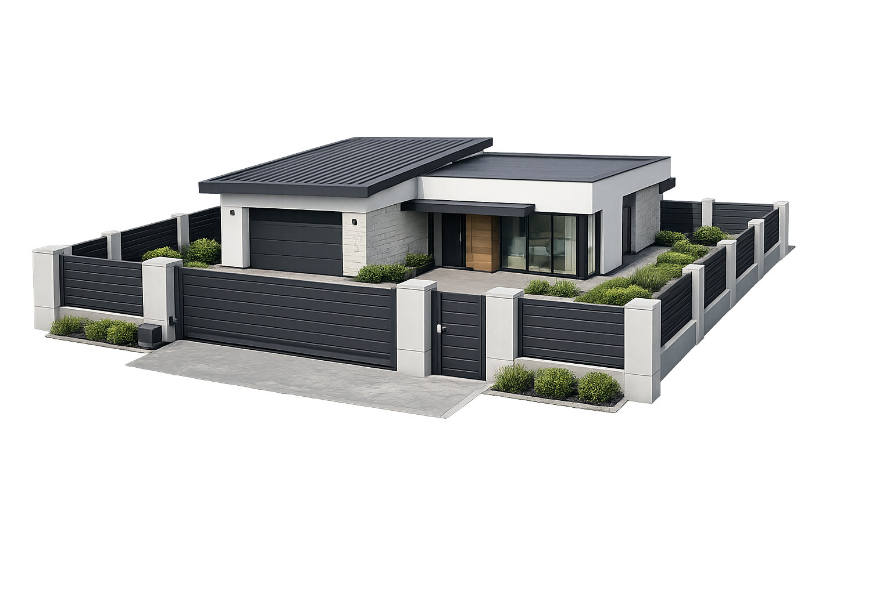

Werka Bramy • Poradniki
Praktycznie o bramach, automatyce i ogrodzeniach.
Materiały dla osób planujących bramę, furtkę lub ogrodzenie na Śląsku — szczególnie w Rudzie Śląskiej, Katowicach i okolicznych miastach.
Artykuły
Sprawdź przed wyceną i montażem.
Bez marketingowego lania wody: najważniejsze kwestie, które warto znać przed wyborem rozwiązania do swojej posesji.

Jak wybrać bramę przesuwną na posesję?
Praktyczny poradnik o miejscu na skrzydło, wymiarach, przygotowaniu pod automatykę i montażu na Śląsku.
Czytaj artykuł →
Automatyka do bram — co warto wiedzieć przed montażem?
Jak dobrać napęd, na co zwrócić uwagę przy bezpieczeństwie oraz kiedy przygotować automatykę do nowej bramy.
Czytaj artykuł →
Jak połączyć bramę, furtkę i ogrodzenie w jeden projekt?
Jak zaplanować spójny front posesji, żeby brama, furtka i przęsła wyglądały dobrze i były wygodne w użytkowaniu.
Czytaj artykuł →Werka Bramy • Śląsk
Masz zdjęcie wjazdu? Wyślij je do wyceny.
Realizujemy bramy, furtki, ogrodzenia i automatykę m.in. w Rudzie Śląskiej, Katowicach, Zabrzu, Chorzowie i okolicach.